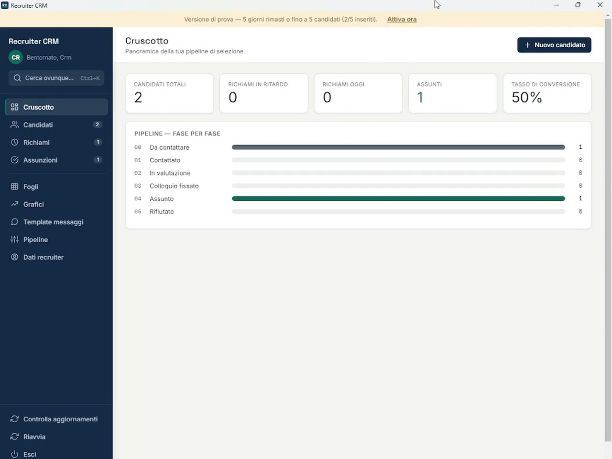
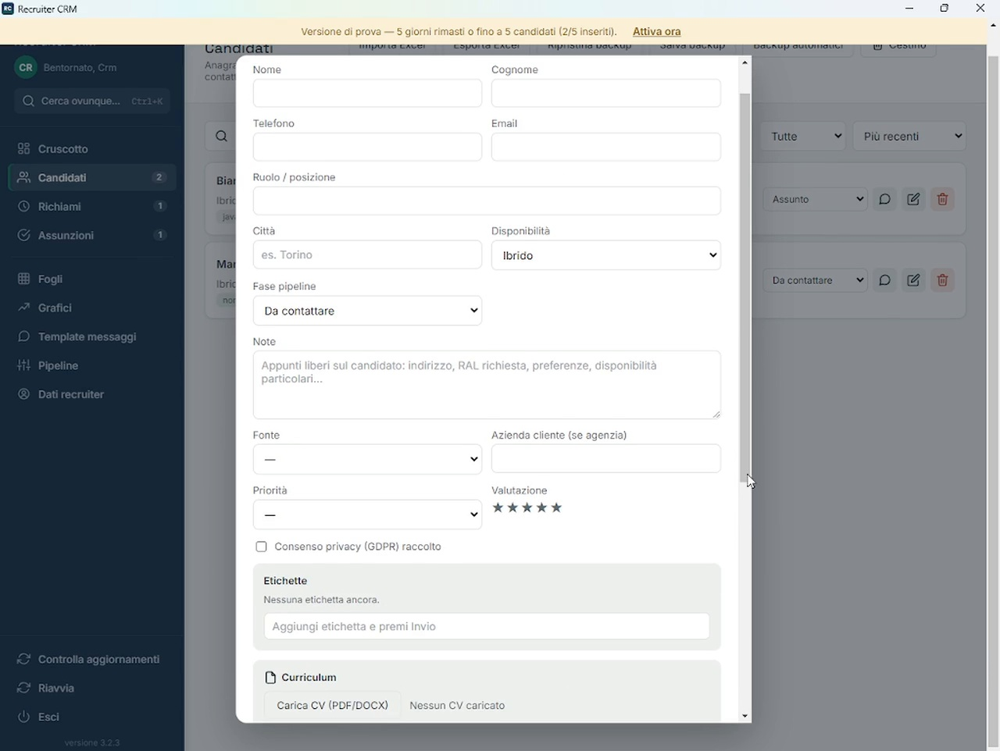
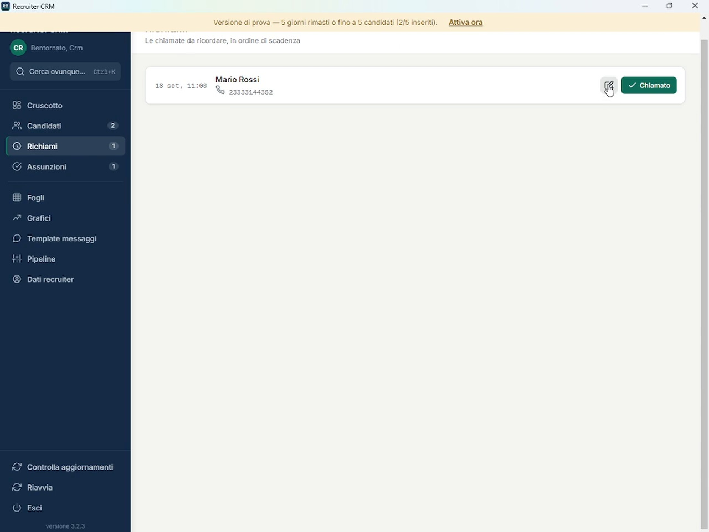

◎
Candidati & pipeline
Anagrafica completa, fasi personalizzabili, vista Lista o Kanban, etichette, valutazione e storico attività.
Recruiter CRM è un software ATS e CRM per recruiter che permette di gestire candidati, pipeline di selezione, CV, note, richiami, attività e template in un'unica applicazione Windows.

Dalla prima candidatura al colloquio, fino all'assunzione: organizza il tuo lavoro senza dipendere da un abbonamento mensile e senza tenere tutto sparso tra fogli, email e appunti.
Un software per recruiting progettato per gestire candidati, selezione del personale, pipeline, attività e organizzazione del lavoro quotidiano dei recruiter.
Anagrafica completa, fasi personalizzabili, vista Lista o Kanban, etichette, valutazione e storico attività.
Organizza le chiamate da fare e ricevi una notifica di Windows quando arriva il momento.
Carica CV PDF o Word: il programma compila da solo nome, telefono, email e città nella scheda e riconosce le competenze presenti nel testo.
Crea fogli personalizzati, usa tipi di dato, convalida, ridimensionamento e copia/incolla con Excel.
Visualizza candidati per fase, assunzioni per mese e distribuzione per fonte direttamente dai tuoi dati.
Modelli per LinkedIn ed email e generatore di inviti a colloquio con link Teams, Zoom o Meet cliccabile.
Il programma conserva automaticamente le ultime 10 copie di sicurezza, oltre al backup manuale.
Quando arriva una nuova versione, Recruiter CRM la segnala e propone di scaricarla e installarla.

Gestisci i candidati in ogni fase della selezione: contatti, ruolo cercato, disponibilità, pipeline, fonte, cliente, note, CV e consenso privacy.
Richiami, fogli di lavoro, messaggi e grafici sono integrati nello stesso ambiente, così puoi passare da un'attività all'altra senza cambiare strumento.
Vedi Recruiter CRM in azione →
Una panoramica veloce delle principali funzioni di Recruiter CRM.
Consulta il manuale d'uso per scoprire tutte le funzioni del programma, dall'installazione alla gestione dei candidati, fino a backup e aggiornamenti.
Leggi il manualeCandidati, fogli e impostazioni vivono in una cartella separata sul computer. Disinstallare o aggiornare il programma non la tocca. Recruiter CRM conserva inoltre automaticamente le ultime 10 copie di sicurezza.
Scarica gratuitamente Recruiter CRM e installalo sul tuo PC Windows.
Hai 14 giorni per vedere se fa al caso tuo.
Se ti trovi bene, puoi acquistare la licenza lifetime per 79 € una tantum.
Ricevi via email la chiave di licenza e la inserisci nel programma per attivarlo.
Guide, modelli e un piccolo gioco: non serve registrarsi.
Il programma vero con dati di esempio, senza installare nulla.
Scarica un foglio pronto per tracciare i candidati e leggi la guida.
Modelli da copiare: collegamento, follow-up, rifiuto, referral.
60 secondi per assumere i candidati giusti. Quanti punti fai?
La versione di prova è gratuita per 14 giorni.
Scarica Recruiter CRM →Pagamento una tantum. Nessun abbonamento.
Scarica la prova gratuita e guarda se può diventare il tuo strumento quotidiano.
Vuoi maggiori informazioni, provare Recruiter CRM o hai bisogno di assistenza? Scrivimi direttamente.
14 giorni dal primo avvio, poi il programma chiede la licenza per continuare.
No. La licenza completa costa 79 € una tantum ed è lifetime.
Recruiter CRM è pensato per lavorare offline e i dati restano sul PC. Serve una connessione solo per attivare la licenza la prima volta.
La versione attuale è pensata per Windows.
Sì, Recruiter CRM è disponibile in italiano e in inglese. Puoi cambiare lingua in qualsiasi momento dal menu del programma, senza reinstallare nulla.
Gli aggiornamenti non toccano la cartella separata in cui sono conservati dati e impostazioni.
Dopo l'acquisto ricevi via email la chiave di licenza: la incolli nel programma al primo avvio per attivarlo.
Prima di acquistare hai 14 giorni di prova gratuita per verificare che il programma faccia al caso tuo, senza alcun impegno. Proprio per questo, una volta completato l'acquisto e ricevuta la licenza digitale, non sono previsti rimborsi: l'acquisto è da considerarsi definitivo.